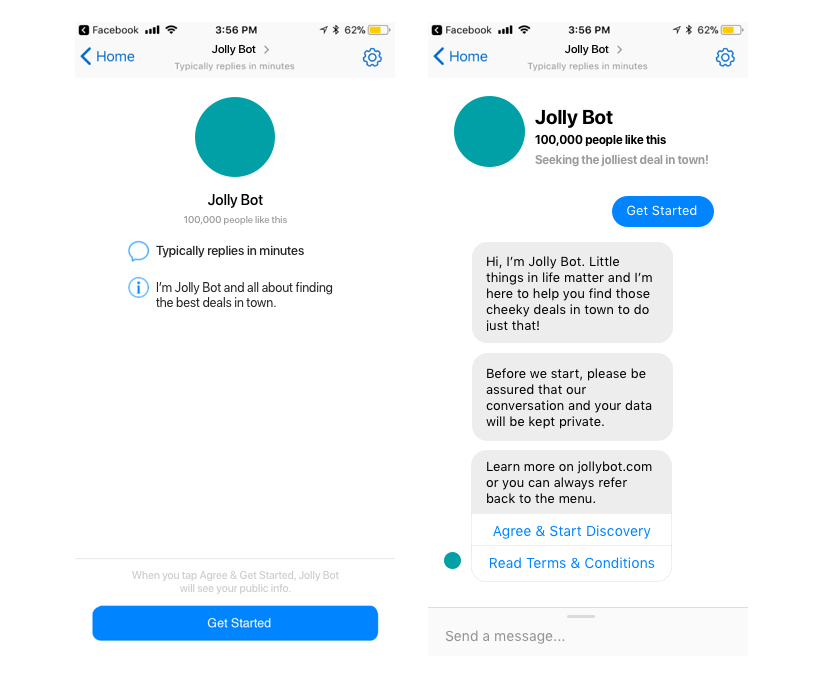
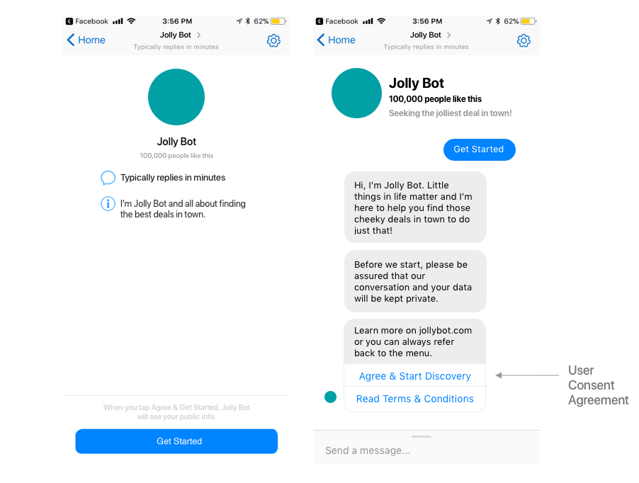
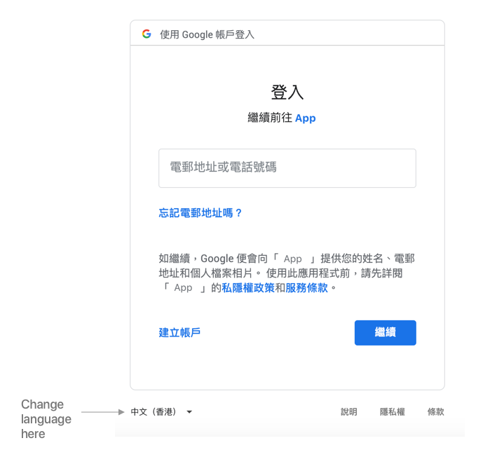
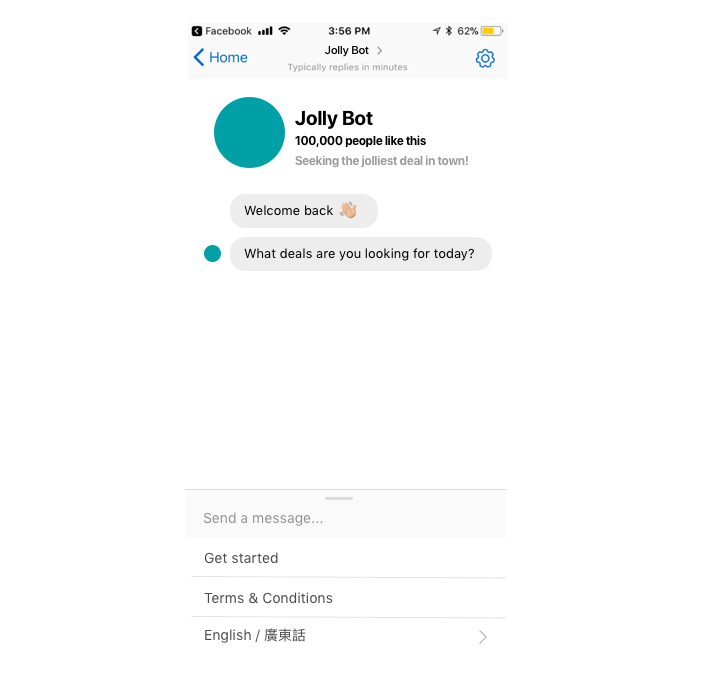
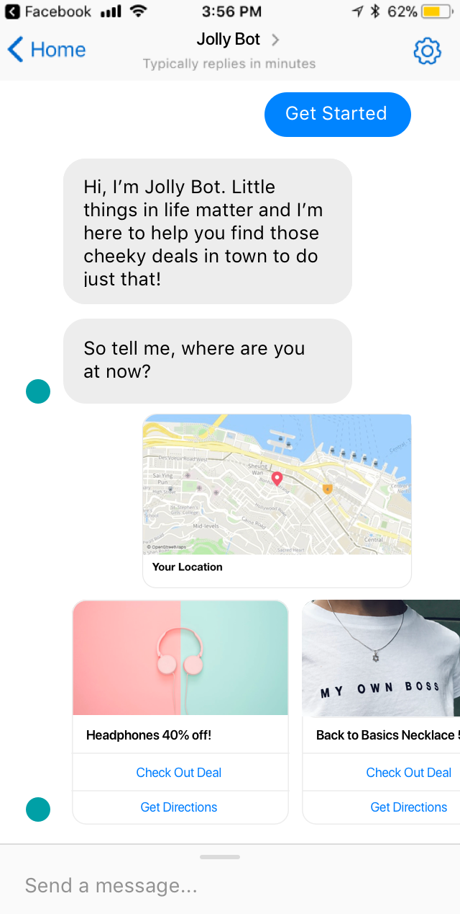
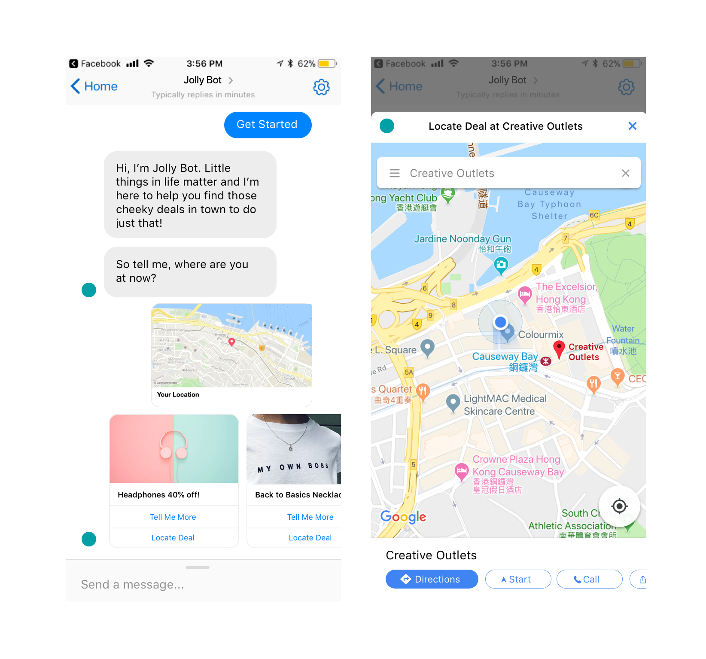

User Consent Agreement
User Consent Agreement
Given the importance of data privacy and security, user consent is typically required and designed as part of onboarding. (Also known as the least favorite part of the experience)
On Facebook Messenger, there are two components to the onboarding - the welcome screen, with a 1000 character limit, and the chatbot’s introduction screen.
Given these two component options, I could insert the user consent agreement in either the welcome or introduction screen.
I mocked up two versions and validated it with a small sample of users:

Version 1: getting user consent in the welcome screen

Version 2: getting user consent in the introduction screen
The final verdict was version 1. Having the user consent agreement on the welcome screen makes the experience feel less clunky and more up front.
Change Language
In most digital experiences, the 'change language' function is typically nested inside the menu or settings. Adhering to user expectations, this is the first place to have it.
When Language Default Fails
Hong Kong is a relatively bi-lingual market, but Cantonese (a dialect of Chinese) is still the primary language over English. As a result, global brands like Google defaults our online experiences to Cantonese.
For me, my Google account preferences are all set in English. But whenever I open a Google Maps link or connect with my Google account for logins, the default language is Cantonese.
Luckily, I am a bi-lingual. But for English speakers, how would they know how to change languages if it’s in a foreign language?

An example of connecting with Google Login where the default language is Cantonese for Hong Kong
The first touch I introduced was making the change language option bi-lingual.

Change language setting is now available in two languages
Another common path to changing languages is at the beginning of a conversation.
Making use of Facebook Messenger's 'Quick Reply' component, I tested the sequence of changing language either before or after user consent.
This was an easy one. Users preferred version 2, which was more straightforward. They can change languages via 'Quick Reply' and then agree to the user consent.
Share Location
One of the search parameters is by sharing current location to discover what's nearby.

User searching for offers nearby by sharing location
In mobile contexts, users tend to search on-the-go. It's easy to get distracted when crossing the street, avoiding pedestrians or replying to friends' messages.
After sharing your location, Messenger uses the cached location. But when you are moving around, this cached location is no longer real-time and inaccurate for any subsequent searches for directions or time to destination.
To manage the misleading results of 'Get Directions', I requested our developer to change the Google Maps API to call the location only and renamed the CTA 'Locate Deal' instead.
The result is just a pinned location for the offer and users can click 'Directions' to search from their current location if needed.

View location and up to users if they want to search for directions